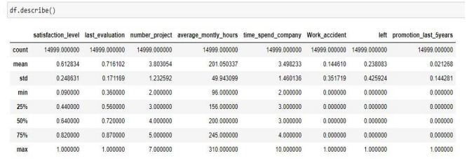
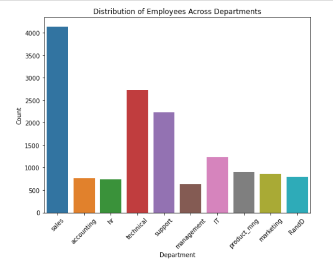
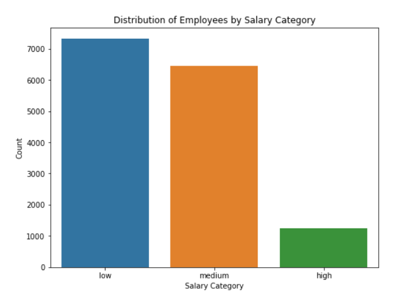
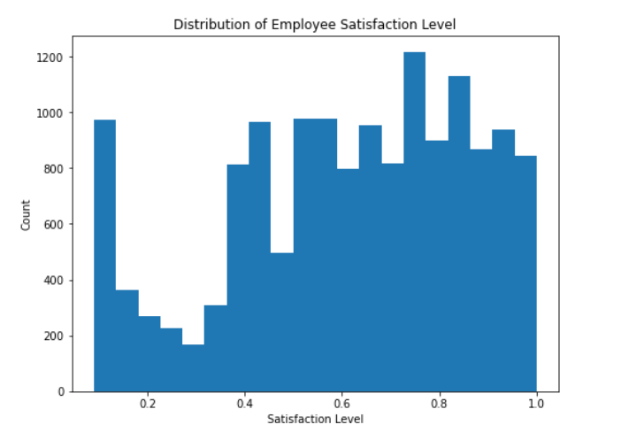
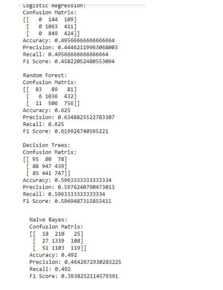

Predictive Modeling for Salary Categorization of Employees
Introduction
Organizations face the ongoing problem of successfully managing and compensating their
employees in today's dynamic and continually evolving workforce. Employee remuneration
affects not only a person's financial stability, but also their job satisfaction, motivation, and overall
performance. However, effectively categorizing employee pay as high, medium, or low is a
difficult undertaking that necessitates a thorough grasp of the different elements that influence
compensation decisions. As a result, organizations frequently struggle to maintain a fair and
transparent remuneration system that is aligned with employee contributions.
The significance of resolving this issue cannot be emphasized. Employee engagement, retention,
and productivity are all dependent on a fair and balanced compensation scheme. When
employees believe their compensation are consistent with their talents, expertise, and efforts, it
generates a sense of justice and motivates them to achieve to their full potential. An unfair or
misaligned remuneration structure, on the other hand, can lead to demotivation, decreased job
satisfaction, and increased turnover rates, hurting organizational performance.
To solve this essential issue, this research proposes developing predictive models capable of
accurately categorizing employee pay based on a wide range of independent parameters. We hope
to capture the multifaceted nature of salary categorization by utilizing a variety of variables such
as the individual's level of happiness, average monthly working hours, tenure within the
organization, current employment status, past promotions within the last five years, and
department affiliation (particularly the sales department).
This study will use four distinct types of predictive models—logistic regression, random forests, decision
trees, and naive Bayes—to see which strategy is most effective for properly forecasting employee
compensation categories. We will choose the best-performing model based on scoring measures like as
accuracy, precision, F1 score, and recall score.
The data set chosen for this project is the "HR_comma_sep",
(https://www.kaggle.com/datasets/liujiaqi/hr-comma-sepcsv) from Kaggle. This data set contains 14998
records of employees and 10 variables/features. .
Analysis and Insights EDA
To analyze the dataset, EDA employs a number of approaches and tools, such as summary statistics,
data visualization, and data cleaning.
a) Descriptive statistics

The table above provides the summary of descriptive statistics which includes the mean, standard deviation,
minimum and maximum of all the variables.
b)
Distribution of Department

The distribution shows that the sales department has the highest distribution of employees while
management department has the least number of employees.
c)
Distribution of sales Category

The distribution shows that the number of employees who receive low salary is higher followed by
medium category while high salaried employees are the least.
d)
Distribution of satisfaction level

The distribution of satisfaction level is not normally distributed i.e. its not symmetric.
Data Preparation
The data preparation phase is a crucial step in research, ensuring that the dataset is cleaned, transformed,
and organized for further analysis and modeling. The data preparation techniques
performed on this data include Feature Scaling, One-Hot Encoding, Binning, Log Transformation
and Feature Interaction.
e)
Model Building
The model development phase is an important element in this research since it involves
developing prediction models to appropriately categorize employee compensation as high,
medium, or low based on a range of independent characteristics. During this step, relevant
modelling approaches are chosen, models are trained on the prepared dataset, their performance
is evaluated, and the best-performing model is chosen for further research. For this research, 4
types of models are used to predict salary i.e. logistics regression, random forests, decision trees
and naive Bayes and use scoring metrics that includes accuracy, precision, F1 score and recall
score to determine the best model for predicting employee’s salary.

From the model development and evaluation, the following conclusions can be drawn:
1. Logistic Regression: The accuracy of the logistic regression model was approximately
49.6%. Additionally, the precision, recall, and F1 score were relatively low.
2. Random Forest: The random forest model outperformed logistic regression by
approximately 62.5% in terms of accuracy. As indicated by the confusion matrix, its
performance improved across all salary brackets. In comparison to logistic regression, the
precision, recall, and F1 score were notably higher.
3. Decision Trees: The accuracy of the decision tree model was approximately 59.6%. The
performance was comparable to that of random forest, albeit with slightly inferior
precision, recall, and F1 score values. However, it was still superior to logistic regression.
4. The accuracy of the naive Bayes model was approximately 49.2 percent. Additionally, the
precision, recall, and F1 score were relatively low.
Overall, among the evaluated models, the random forest model demonstrated the highest levels
of accuracy, precision, recall, and F1 score. Compared to other models, it demonstrated a
superior ability to predict differences in salary categories.
Conclusion
Based on the results of the model development and evaluation, several conclusions can be drawn.
The random forest model emerged as the most promising among the evaluated models. It
showcased the highest levels of accuracy, precision, recall, and F1 score, indicating its superior
ability to predict salary categories. Therefore, it could be considered for deployment in practical
applications.
However, before deploying the model, several considerations and challenges need to be explored.
First, it is important to assess the generalizability of the model on unseen data to ensure its
robustness. Additionally, further analysis should be conducted to understand the factors that
contribute most to the model's predictions, as this can provide valuable insights and enhance
interpretability.
Moreover, the performance of the model should be evaluated on diverse datasets to account for
potential biases and ensure fair predictions across different demographic groups. It is crucial to
address any biases present in the data or the model itself to avoid perpetuating discriminatory
outcomes. Furthermore, ongoing monitoring and re-evaluation of the deployed model's
performance is essential to detect any degradation in accuracy or biases that may arise due to
evolving data patterns or changes in the target population.
In conclusion, while the random forest model demonstrates promising performance, additional
exploration and validation are necessary before deploying it in real-world applications.
Addressing potential challenges such as generalizability, interpretability, bias mitigation, and
ongoing monitoring will contribute to the model's readiness and reliability.